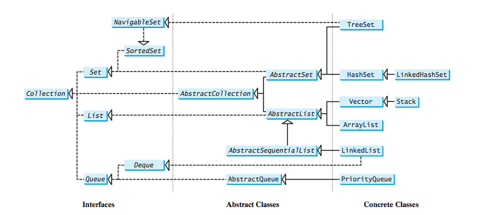
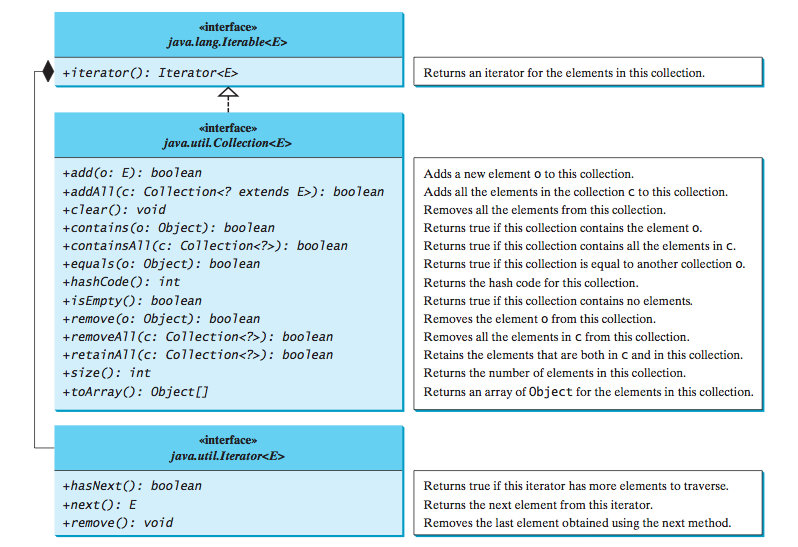
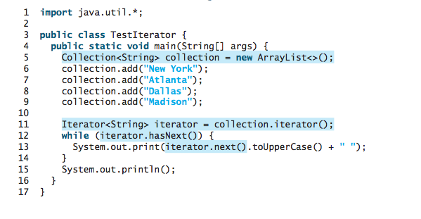
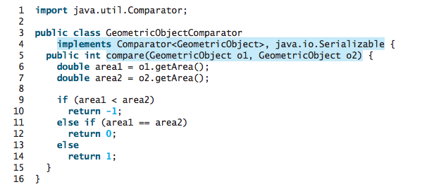
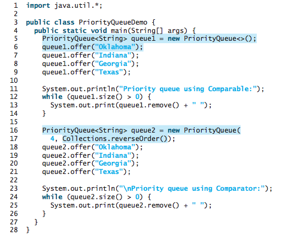

CS203: Programming with Data Structure
Lecture 4 / Lists, Stacks, Queues, and Priority Queues
Reading assignment: chapter 20
Lesson Objectives
- To explore the relationship between interfaces and classes in the Java Collections Framework hierarchy
- To use the common methods defined in the Collection interface for operating collections
- To understand in detail how a linked-list works
- To use the Iterator interface to traverse the elements in a collection
- To use a foreach loop to traverse the elements in a collection
- To explore how and when to use ArrayList or LinkedList to store a list of elements
- To compare elements using the Comparable interface and the Comparator interface
- To use the static utility methods in the Collections class for sorting, searching, shuffling lists, and finding the largest and smallest element in collections
- To distinguish between Vector and ArrayList and to use the Stack class for creating stacks
- To explore the relationships among Collection, Queue, LinkedList, and PriorityQueue and to create priority queues using the PriorityQueue class
- To use stacks to write a program to evaluate expressions
Introduction
Java provides several more data structures that can be used to organize and manipulate data efficiently. These are commonly known as Java Collections Framework. We will introduce the applications of lists, vectors, stacks, queues, and priority queues.
Collection
A collection is a container-like datastructure that holds data (any kind of data).
The Java Collections Framework supports two types of containers:
- One for storing a collection of elements is simply called a collection.
- The other, for storing key/value pairs, is called a map (next lecture).
We focus (for now) on these:
- Sets store a group of nonduplicate elements.
- Lists store an ordered collection of elements.
- Stacks store objects that are processed in a last-in, first-out fashion.
- Queues store objects that are processed in a first-in, first-out fashion.
- PriorityQueues store objects that are processed in the order of their priorities.
How does all this fit into the Java Collection Framework?
How does one iterate or go through a collection?
Example code of how iterators are used.
Lists
The List interface extends the Collection interface and defines a collection for storing elements in a sequential order. To create a list, use one of its two concrete classes: ArrayList or LinkedList.
ArrayList stores elements in an array. The array is dynamically created. If the capacity of the array is exceeded, a larger new array is created and all the elements from the current array are copied to the new array. This is inefficient if you need to do lots of insertion or removal.
LinkedList stores elements in a linked list.
Linked List

public class node {
String value;
node nextRef;
}
To iterate through the linked list, we would need to traverse one node at a time:
node ptr;
for (ptr = head; ptr != null; ptr = ptr->next) {
// data is now ptr.value;
System.out.println(ptr.value);
}
Recall from our generic lecture, we can now use T.
public class node{ T value; node nextRef; }
Comparable Interface
Comparator can be used to compare the objects of a class that doesn't implement Comparable.
Static methods for Collections
It's often the case that you need to use an existing method that solve a common problem when working with collections. We now define a number of these common used "patterns".
Sorting
Listlist = Arrays.asList("red", "green", "blue"); Collections.sort(list);
Listlist = Arrays.asList("yellow", "red", "green", "blue"); Collections.sort(list, Collections.reverseOrder());
Searching
Listlist1 = Arrays.asList(2, 4, 7, 10, 11, 45, 50, 59, 60, 66); System.out.println("Index: " + Collections.binarySearch(list1, 7));
Shuffling
Listlist = Arrays.asList("yellow", "red", "green", "blue"); Collections.shuffle(list);
Copying
Listlist1 = Arrays.asList("yellow", "red", "green", "blue"); List list2 = Arrays.asList("white", "black"); Collections.copy(list1, list2);
Fill
Listlist = Arrays.asList("red", "green", "blue"); Collections.fill(list, "black");
Max and Min
Collectioncollection = Arrays.asList("red", "green", "blue"); System.out.println(Collections.max(collection)); System.out.println(Collections.min(collection));
Disjoint
Collectioncollection1 = Arrays.asList("red", "cyan"); Collection collection2 = Arrays.asList("red", "blue"); Collection collection3 = Arrays.asList("pink", "tan"); System.out.println(Collections.disjoint(collection1, collection2)); System.out.println(Collections.disjoint(collection1, collection3));
Frequency
Collectioncollection = Arrays.asList("red", "cyan", "red"); System.out.println(Collections.frequency(collection, "red"));
Vector and Stack classes
Vector is the same as ArrayList, except that it contains synchronized methods for accessing and modifying the vector. Synchronized methods can prevent data corruption when a vector is accessed and modified by two or more threads concurrently.
The Stack class was introduced prior to Java 2. The methods shown in Figure 20.11 were used before Java 2. The empty() method is the same as isEmpty(). The peek() method looks at the element at the top of the stack without removing it. The pop() method removes the top element from the stack and returns it. The push(Object element) method adds the specified element to the stack. The search(Object element) method checks whether the specified element is in the stack.
Queues and Priority Queues
A queue is a first-in, first-out data structure. Elements are appended to the end of the queue and are removed from the beginning of the queue. In a priority queue, elements are assigned priorities.
The PriorityQueue class implements a priority queue, as shown in Figure 20.14. By default, the priority queue orders its elements according to their natural ordering using Comparable.
Lab Exercises
For each of the following exercises, practice developing and running your program with Eclispe. Note that the lab assignments are not graded.
- Write a recursive algorithm that visits each of the node.